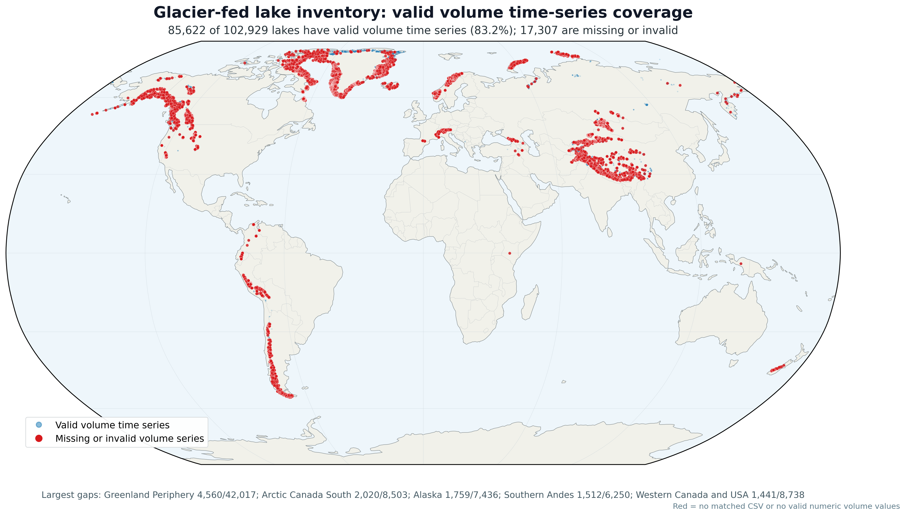
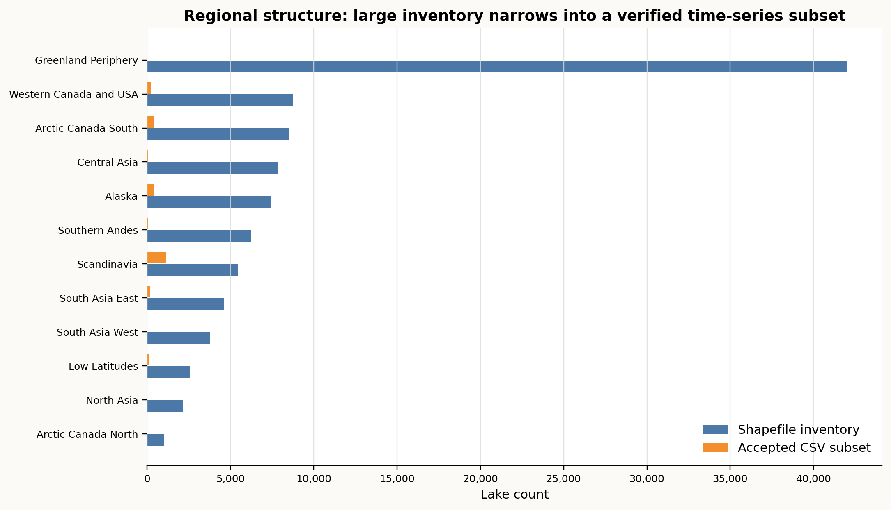
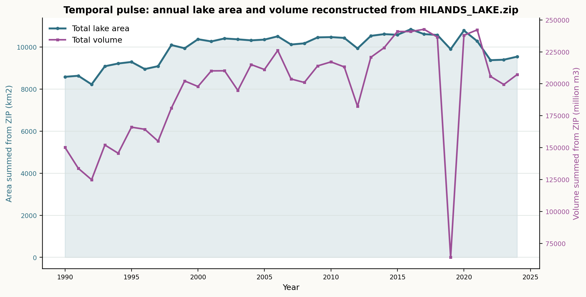
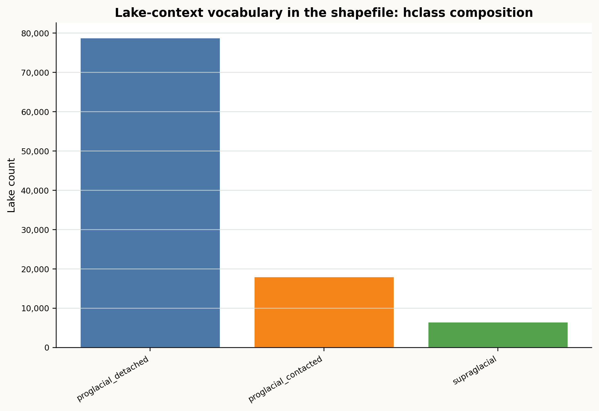

空间底图
glacier_fed_lakes_17regions_merged.rar 解压后为 5 个 shapefile 组件，包含 102,929 条记录、17 个 RGI/GLAMBIE 区域，字段包括 lake_id、lake_type、hclass、rgi_name、area0_km2、lat/lon。
这份验收页把 data 下的多边形清单、经纬度时序索引和逐湖年度序列串成一个可读的数据概念：哪里有湖，哪些湖已经进入可分析时序，1990-2024 年间面积和库容如何共同起伏。
Cartopy 地图中，蓝色半透明点表示 RAR shapefile 中的冰川补给湖全集，橙色点表示 complete_timeseries_ids_with_latlon.csv 中已经具备经纬度和时序 ID 的验收子集。橙色点并不是均匀抽样，而是沿冰川活动区聚集，尤其集中在 Scandinavia、Alaska、Arctic Canada South、Western Canada and USA 等区域。

area0_km2 缩放。glacier_fed_lakes_17regions_merged.rar 解压后为 5 个 shapefile 组件，包含 102,929 条记录、17 个 RGI/GLAMBIE 区域，字段包括 lake_id、lake_type、hclass、rgi_name、area0_km2、lat/lon。
HILANDS_LAKE.zip 内有 10,556 个逐湖 CSV，按文件名去重后为 8,183 个唯一 Hylak_id；字段为 year、area_km2、volume_million_m3，年度长度中位数为 35 年。
complete_timeseries_ids_with_latlon.csv 提供 2,674 个可直接定位的时序湖点，全部能在 ZIP 中找到对应逐湖文件；它是 ZIP 的一个已定位、已映射子集，不是全部 8,183 个 ZIP 湖泊。
核心判断：complete_timeseries_ids_with_latlon.csv 与 HILANDS_LAKE.zip 是匹配的，匹配字段是 Hylak_id；但它们并不覆盖 glacier_fed_lakes_17regions_merged.shp 中的所有冰川湖。ZIP 文件名不是 shapefile 的 lake_id，两套 ID 体系需要通过 CSV 中的 Hylak_id → glacier_lake_id 映射连接。
Hylak_id。Hylak_id，全部能在 ZIP 中找到，匹配率 100%。lake_id，其中 100,307 个没有进入当前 HILANDS 映射子集。| 对账项 | 结果 | 解释 |
|---|---|---|
| CSV 的 Hylak_id 是否都在 ZIP 中 | 2,674 / 2,674 | 是，二者严格匹配；CSV 是 ZIP 中一部分湖泊的空间索引表。 |
| ZIP 文件是否唯一 | 10,556 文件；8,183 唯一 ID | 有 2,373 个重复 ID 文件，常见为两个目录下各有一份同名 CSV。 |
| CSV 映射到 shapefile | 2,622 / 102,929 | 只覆盖冰川湖全集约 2.55%，不能当作全集时序。 |
| ZIP 文件名直接匹配 shapefile lake_id | 667 / 8,183 | 直接匹配很少，主要原因是 ZIP 用 Hylak_id，shapefile 用 lake_id。 |
全集和验收子集的区域结构并不完全等比例：全集反映全球冰川补给湖空间底盘，CSV 子集更像一批已打通“位置-湖泊ID-年度面积/体积”的可分析样本。

| 区域 | shapefile 湖泊数 | shapefile 初始面积 km2 | CSV 湖泊数 | CSV/全集 |
|---|---|---|---|---|
| Greenland Periphery | 42,017 | 9,818.4 | 0 | 0.0% |
| Western Canada and USA | 8,738 | 868.6 | 247 | 2.8% |
| Arctic Canada South | 8,503 | 2,370.9 | 414 | 4.9% |
| Central Asia | 7,846 | 539.4 | 66 | 0.8% |
| Alaska | 7,436 | 2,580.3 | 438 | 5.9% |
| Southern Andes | 6,250 | 2,663.7 | 47 | 0.8% |
| Scandinavia | 5,437 | 1,309.7 | 1,148 | 21.1% |
| South Asia East | 4,602 | 420.0 | 159 | 3.5% |
| South Asia West | 3,775 | 193.6 | 12 | 0.3% |
| Low Latitudes | 2,586 | 304.0 | 114 | 4.4% |
| North Asia | 2,159 | 181.8 | 22 | 1.0% |
| Arctic Canada North | 1,015 | 336.6 | 0 | 0.0% |
把 ZIP 中所有逐湖文件按年份汇总后，可以看到年度总面积和估算库容共同构成数据的“脉搏”。这不是最终科学结论，而是验收层面的完整性与可用性检查：年份连续、字段可解析、数量级稳定。

shapefile 的 hclass 字段给湖泊一个地貌语境，使后续分析可以从单纯面积变化，走向“哪类冰川补给湖在变”的机制描述。

| hclass | 湖泊数 | 占比 |
|---|---|---|
| proglacial_detached | 78,708 | 76.5% |
| proglacial_contacted | 17,879 | 17.4% |
| supraglacial | 6,342 | 6.2% |
本次验收确认：complete_timeseries_ids_with_latlon.csv 与 HILANDS_LAKE.zip 能通过 Hylak_id 100% 对应；这些记录再通过 glacier_lake_id 连接到 shapefile 中的 2,622 个唯一冰川湖。需要特别说明的是，这只是冰川湖全集中的一个小型时序子集，不是所有 102,929 个冰川湖的一一时序覆盖。Cartopy 地图可正常绘制全球分布，ZIP 中年度面积与体积字段可批量读取并按年汇总。输出资产位于 data/concept_report_assets，机器可读摘要见 glacier_lake_data_summary.json 和 hilands_lake_id_audit.json。